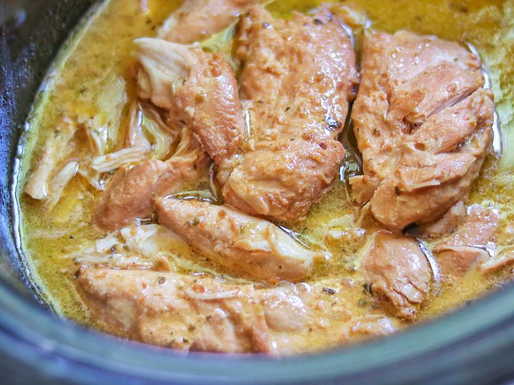

Italian Chicken
Descriptions
You only need 3 ingredients for this crockpot Italian chicken with Italian dressing and Parmesan cheese. Nothing could be easier than this for a weekday meal that's ready when you get home.
Nothing could be easier than this for a weekday meal that's ready when you get home.